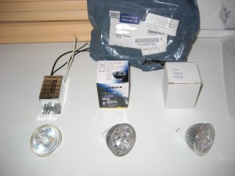
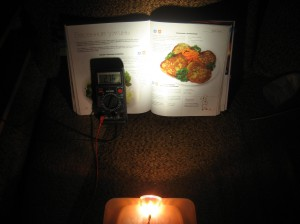
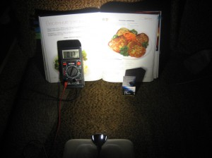
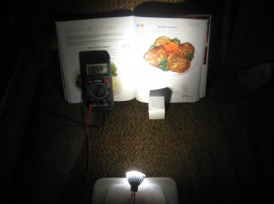
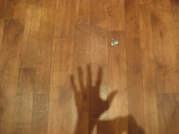
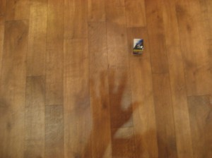
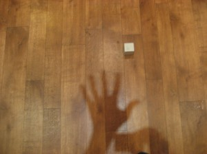

Было бы замечательно замутить так, чтобы тратить меньше денег. Один из путей — это перестать пользоваться продукцией естественных монополий, узурпированных властями. Например электричеством. Солнечные батареи являются замечательной альтернативой электрической розетке. Но есть пара нюансов.
Первый состоит в том, что система электроснабжения на солнечных батареях никогда не окупится. Электричество выработанное в течении срока их эксплуатации стоит в разы меньше чем совокупная стоимость солнечных панелей, инверторов, контроллеров, и самое главное, аккумуляторов. Необходимость использования аккумуляторов обусловлена тем, что потребление энергии например на освещение происходит какраз в темное время суток, тоесть энергию нужно гдето накапливать. А инновационное рассейское государство в ближайише десятилетия наврятли предоставит гражданам возможность использовать общие электросети для пирингового обмена электроэнергией с другими потребителями. В приличных странах такая возможность передачи излишков электроэнергии обратно в сеть позволяет построить систему энергоснабжения дома без применения аккумуляторов, что делает ее рентабельной, существенно удешевляя стоимость создания и эксплуатации. Но, даже при складывающемся на сегодняшний день балансе не в пользу солнечных батарей, приятнее заплатить пару лишних долларов зарубежным производителям качественного оборудования, чем российским обнаглевшим монополистам.
Второй важный нюанс состоит в эффективности электропотребления. Даже в сравнительно краткосрочной перспективе, не говоря уже о долгосрочной, гораздо выгоднее вложить средства в энергоэффективные бытовые устройства, чем устанавливать большие по площади солнечные панели, более емкие аккумуляторы и мощные преобразователи. Одним из интересных вариантов экономии является перевод домашнего освещения на светодиодные технологии. Светодиодные (LED) светильники имеют существенные преимущества по сравнению с традиционными лампами накаливания, галогеновыми светильниками и экономичными газоразрядными лампами дневного света. Во-первых они потребляют в разы меньше мощности на единицу светимости. Во-вторых их можно запитать от источника питания постоянного напряжения 12 вольт (DC 12V) — почти напрямую от солнечной панели и аккумулятора через сравнительно простой контроллер. Прямое питание намного эффективнее инверторного преобразования в переменное напряжение 220 вольт (AC 220V).
Производством и перепродажей светодиодных светильников занимается множество организаций. Обозрев имеющиеся на рынке предложения было решено не переплачивать на порядок больше российскому инженерному гению, под хитрым руководством чубаиса торгующему поделками за 999 рублей, а напрямую закупиться у шаолиньцев, предлагающих аналогичные изделия на порядок дешевле вместе с доставкой.
Для пробы 2 октября было заказано с buyincoins два осветительных прибора разных производителей, которые были доставлены чудесным образом уже к 20 октября:
MR16 3W 3 LED 270 Lumen 3000K Warm White Light Bulb 12V за $3.99
MR16 4W 4 LED 3300K Warm White Down Spot Light Bulb 12V за $4.48

На фото представлен трансформатор 220AC/12AC использумый для подключения светильников к сети 220 вольт до будущего момента перехода всего освещения на 12 вольтовое напряжение, 12 вольтовая 35W галогеновая лампочка (странного бренда «UV FILTER») использовавшаяся в освещении до сего дня, два вышеобозначенных китайских светодиодных светильника (3W, 4W) рядом с их упаковками.
{kind=link}
После получения лампочки было решено испытать. Первым тестом было подключение лампочек к 12 вольтовому аккумулятору для оценки потребляемого тока, мощности и приблизительного сравнения светимости.

Галогеновая лампа: потребляемая мощность 12V * 2.76А = 33.12W — что примерно соответствуею заявленным на цоколе 35W.
{kind=link}

Светодиодная лампа 3W (3 светодиода): потребляемая мощность 12V * 0.17А = 2.04W — что существенно меньше заявленной производителем.
{kind=link}

Светодиодная лампа 4W (4 светодиода): потребляемая мощность 12V * 0.43А = 5.16W — что несколько больше номинала, но в целом соответствует заявленной производителем.
{kind=link}
Разницы в силе освещения в этом тесте замечено не было. Поэтому было решено провести второй тест. В середине потолка, покрытого галогеновыми точечными лампами, помещался испытуемый светильник. По четкости тени, отбрасываемой под тестовым светильником, можно понять насколько он сильнее или слабее засветки от окружающих соседних ламп.

Галогеновая лампа 35W
{kind=link}

Светодиодная лампа 3W (3 светодиода)
{kind=link}

Светодиодная лампа 4W (4 светодиода)
{kind=link}
После этого теста ставится заметно, что 3W светильник почти не светит, что логично учитывая малую (2W) потребляемую им мощность.
4W светодиодный светильник светит несколько слабее, но всеже сравнимо с 35W галогеновой лампой, потребляя при этом в 33.12W / 5.16W = 6.41 раз меньше электрической энергии.
Попробую прибрести десяток-другой таких 4W лампочек, заменить часть потолочного освещения на них и проверить надежность и комфортность освещения на большой площади только светодиодными источниками света.